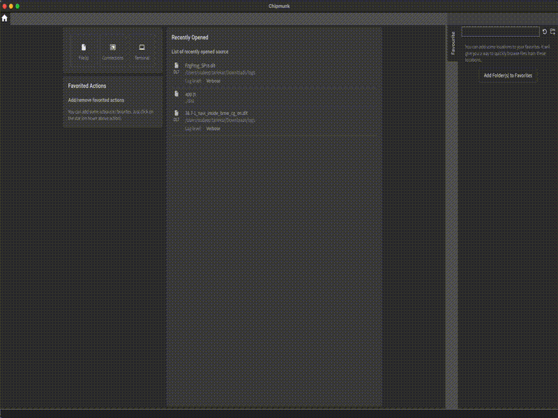
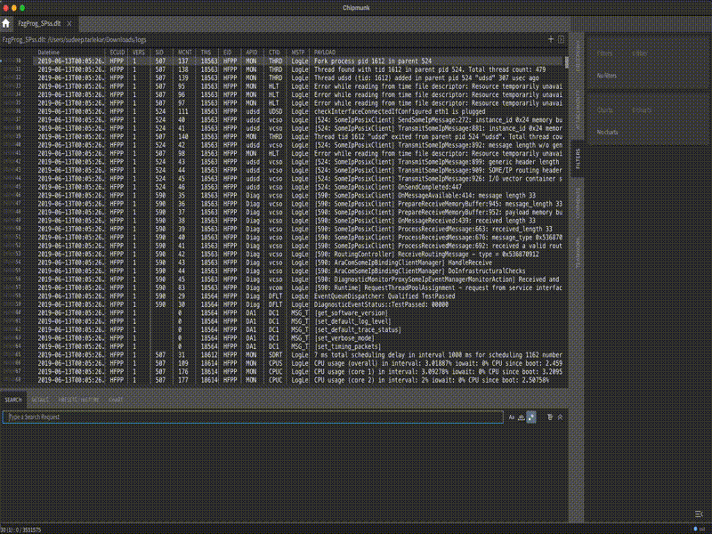
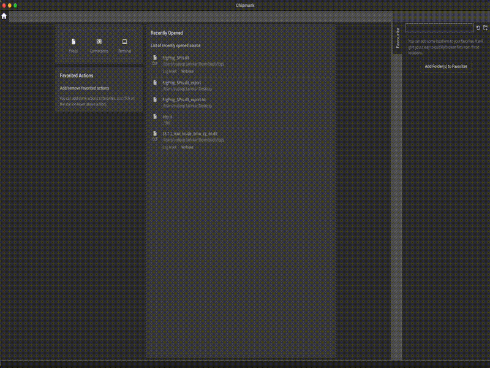
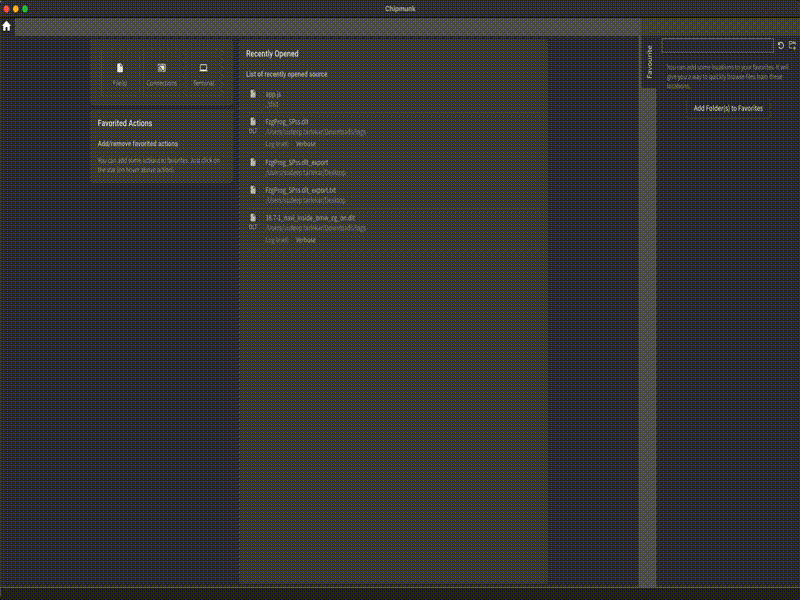

Exporting
Chipmunk supports flexible import and export of log searches and filters, allowing user to save filtered views or search results as standalone files for sharing, archiving, or further analysis, and later re-import them to quickly restore the same context.
Exporting Logs as Plain Text
Once log files are imported into Chipmunk, user can easily export them as plain text logs. This is useful when user need to share logs with tools or colleagues that do not support the specific log format, or when user want a lightweight, human-readable version of the data.

Exporting Search Results
Chipmunk allows user to search specific string or value in the logs and create a search filter for logs. These filters can also be exported as CSV or just plain raw logs.
When exporting a filtered view, Chipmunk supports two formats:
Table
- The search results are exported as a structured text, or in other words CSV file.
- This format is useful when you want to process logs with spreadsheets or data analysis tools (Excel, pandas, etc.).
Raw
- The filtered results are exported as a plain-text
.dlt_exportfile. -
Each log entry is written line by line in a human-readable form, similar to how Chipmunk displays it in the viewer.
This format is best for lightweight sharing, quick inspection, or use with text-based tools like grep or less.

Exporting Presets
In addition to applying presets while analyzing logs, Chipmunk also lets you export and import presets, so you can reuse them across sessions or share them with your team. Chipmunk also allows user to export multiple presets at the same time.

Importing Presets
Chipmunk also supports importing presets back into the tool. Imported presets instantly recreate the same search conditions, so you don’t need to manually re-enter complex queries. Just like exproting multiple presets, Chipmunk allows user to import multiple presets.
